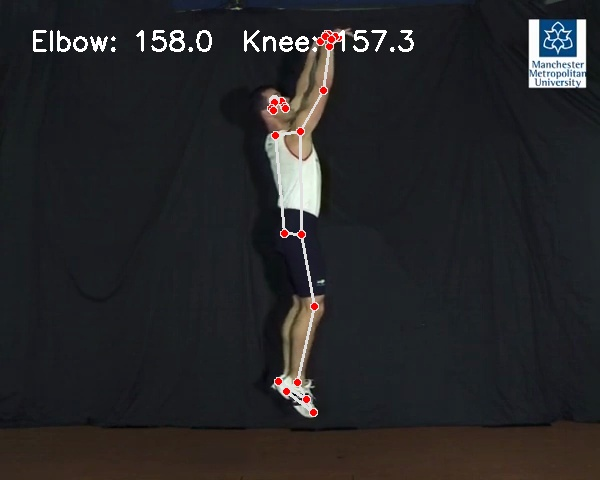

See whether release, balance, knee motion, or timing makes your shot less repeatable.
Understand your shooting mechanics before your next gym session.
Basketball Wurf Check is built for players, parents, and coaches who want a fast second opinion on visible shooting form. The report evaluates mechanics, not the make percentage of one shot.
Get one clear practice focus before the next training session.
Use the video report as a quick starting point for technique conversations and drills.
What kind of video works best?
The clearer the clip, the more detailed the report. One shot can still be analyzed, but multiple shots make the consistency section more useful.
- Ideally upload 5 or more shots from a similar angle.
- Feet, knees, shooting hand, and follow-through should stay visible.
- Side view or 45 degrees is best; front view can still provide cues.
- A normal phone video is enough if lighting and camera stability are reasonable.
- Avoid slow motion, highlight cuts, and very long 4K/HDR files.
What a basic report looks like.
A useful report should not create ten new problems. It should prioritize the one change to test next.

Example annotated release pose. Actual metrics depend on the uploaded video.
84/100 form score
Release pose
Elbow angle, release height, and upper-body position are extracted from the video.
Shot consistency
With multiple shots, the report compares whether release and timing look repeatable.
Training focus
You get one concrete next cue instead of a vague list of problems.
PDF download
Save the report with metrics, image, and drill suggestion.
FAQ
Can I upload only one shot?
Yes. One shot is enough for a first form check. Five or more shots are better for consistency.
Is the score a make percentage?
No. The score describes visible mechanics, balance, timing, and repeatability.
Does a phone video work?
Yes, if the full body stays visible and the camera is not too shaky.
What if the report is not useful?
Use the feedback and refund form with your payment email and a short description.
Ready for your first shot report?
Start with a short clip. Later, record more shots from the same angle to improve the consistency read.